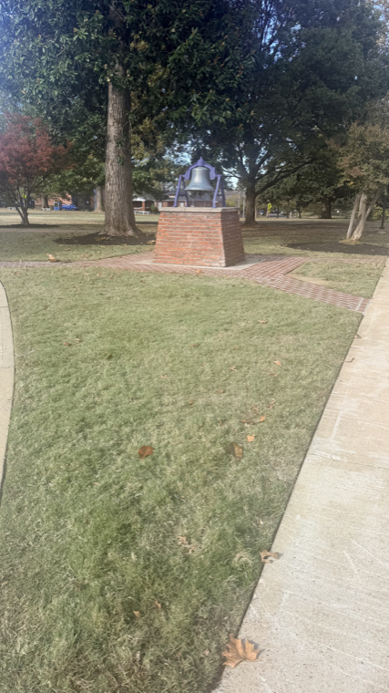
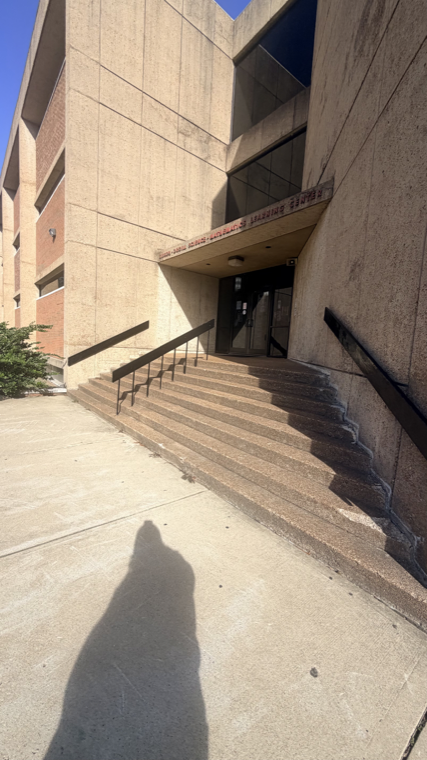
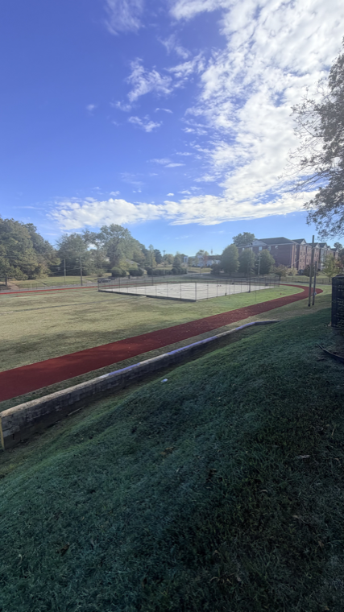
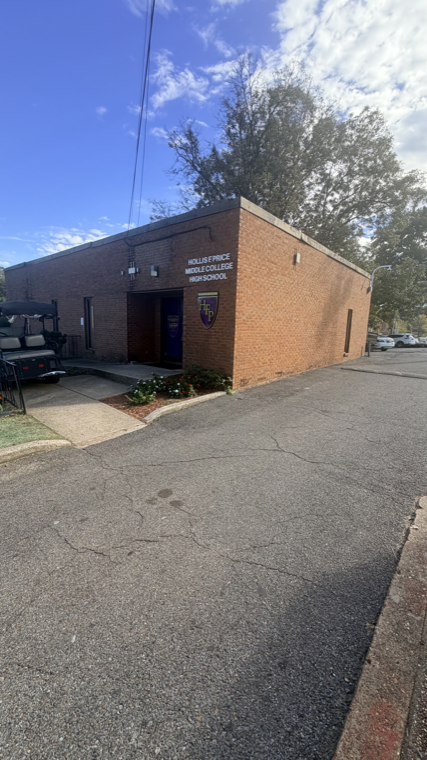
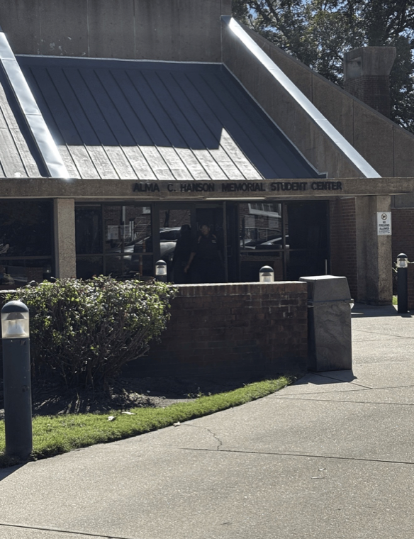

ITEC 305 — Resource Links and Images
LeMoyne-Owen College
Resource Links
LOC Student Portal
Canvas — ITEC 305 Course Modules
ABET Accreditation
Fly Memphis Airport
LOC Center for Cybersecurity
Campus Photos
Founders Bell

GOH Building

Track

Hollis F. Price

Student Center
